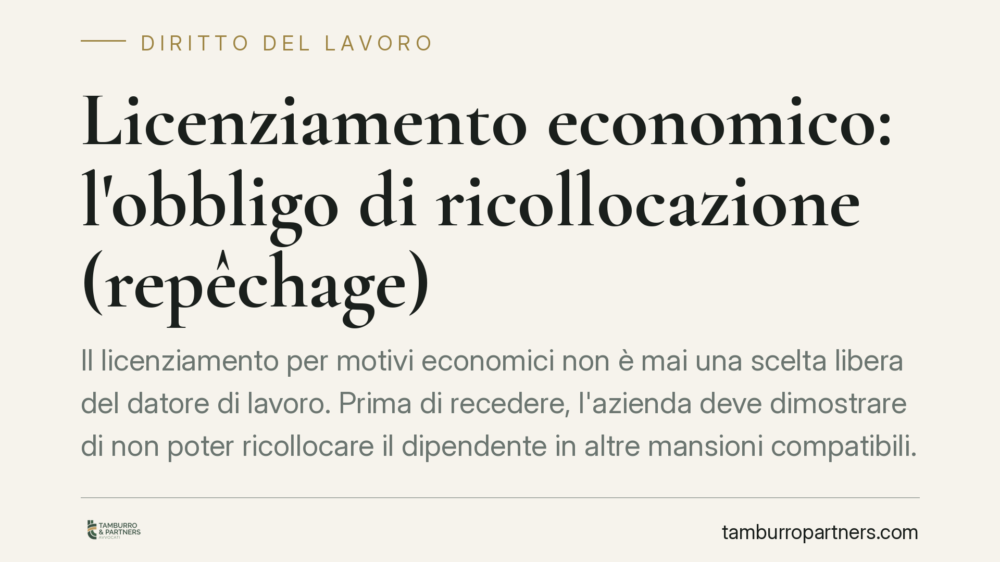

Licenziamento economico: l'obbligo di ricollocazione (repêchage)
Il licenziamento per motivi economici non è mai una scelta libera del datore di lavoro. Prima di recedere, l'azienda deve dimostrare di non poter ricollocare il dipendente in altre mansioni compatibili. È il cosiddetto obbligo di repêchage, ribadito da una consolidata giurisprudenza di Cassazione: senza questa verifica, il licenziamento è illegittimo.

Il fatto: perché il tema conta
Quando un'impresa attraversa una crisi o riorganizza la produzione può ricorrere al licenziamento per giustificato motivo oggettivo, ossia per ragioni economiche legate all'attività produttiva.
Questa facoltà, però, non è illimitata. La legge e la giurisprudenza impongono al datore di lavoro precisi obblighi preliminari. Il più rilevante è l'obbligo di verificare se il lavoratore possa essere reimpiegato altrove in azienda, prima di procedere al recesso.
Inquadramento normativo
Il riferimento è l'art. 3 della legge n. 604 del 1966, che consente il licenziamento individuale per "un giustificato motivo oggettivo" determinato da ragioni inerenti all'attività produttiva, all'organizzazione del lavoro e al suo regolare funzionamento.
Su questa base la Cassazione Civile ha costruito nel tempo l'istituto del cosiddetto repêchage (termine francese che significa "ripescaggio"). In sostanza, il datore di lavoro che intende licenziare per motivi economici deve provare due elementi:
- l'effettiva sussistenza della ragione organizzativa o produttiva (ad esempio la soppressione della posizione lavorativa);
- l'impossibilità di ricollocare il dipendente in altre mansioni presenti in azienda, compatibili con la sua professionalità.
La giurisprudenza ha esteso questo obbligo non solo alle mansioni equivalenti, ma anche a quelle inferiori (compatibilmente con la disciplina sul demansionamento introdotta dall'art. 2103 c.c. dopo la riforma del 2015), qualora il lavoratore vi acconsenta e la posizione sia disponibile.
L'onere della prova grava sul datore di lavoro. Non basta affermare che la posizione è stata soppressa: occorre dimostrare che non esistevano alternative concrete al licenziamento.
Implicazioni pratiche
Per il lavoratore, questo significa che un licenziamento economico può essere impugnato non solo contestando la reale esistenza della crisi, ma anche denunciando la mancata verifica di posizioni alternative. Se in azienda esistevano mansioni compatibili e disponibili, il recesso rischia di essere dichiarato illegittimo.
Per il datore di lavoro, la conseguenza è che il licenziamento va preparato con rigore documentale. Occorre ricostruire in modo verificabile l'assetto organizzativo, la soppressione della posizione e l'assenza di alternative al momento del recesso. Un'istruttoria carente espone l'azienda a costi rilevanti: reintegrazione o indennità risarcitorie a seconda del regime applicabile (Statuto dei lavoratori o disciplina del contratto a tutele crescenti).
È bene ricordare che la valutazione va riferita alla situazione esistente al momento del licenziamento, non a scenari successivi.
Cosa fare in concreto
Se sei un lavoratore:
- Conserva ogni comunicazione ricevuta e verifica la motivazione scritta del licenziamento.
- Raccogli elementi su eventuali posizioni aperte o nuove assunzioni avvenute in azienda in prossimità del recesso.
- Impugna il licenziamento entro 60 giorni dalla ricezione (termine di decadenza), seguiti da 180 giorni per l'azione giudiziale o il tentativo di conciliazione.
Se sei un datore di lavoro:
- Documenta per iscritto le ragioni organizzative e la soppressione effettiva della posizione.
- Verifica e verbalizza l'assenza di mansioni alternative compatibili prima di procedere.
- Valuta l'ipotesi di una proposta di ricollocazione, anche su mansioni inferiori, prima del recesso.
Un rilievo conclusivo
L'obbligo di repêchage non è una formalità burocratica, ma il cuore della verifica di legittimità del licenziamento economico. La sua assenza è tra le cause più frequenti di annullamento in sede giudiziale. Consigliamo di affrontare la questione con un'analisi preventiva della situazione aziendale, prima ancora che il conflitto si trasformi in contenzioso.
---
*Contributo informativo a cura di Tamburro & Partners - Avv. Giuseppe Tamburro. Non costituisce parere legale.*
Ogni storia di lavoro ha i suoi tempi.
Se gestisci HR e vuoi un confronto su contenzioso, ispezioni o licenziamenti, scrivi allo studio. Ti rispondiamo entro un giorno lavorativo.